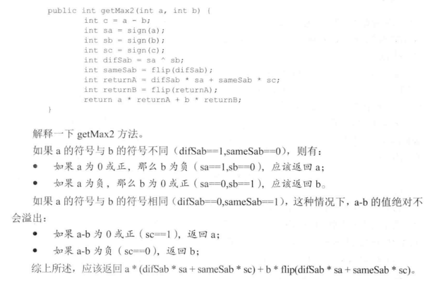
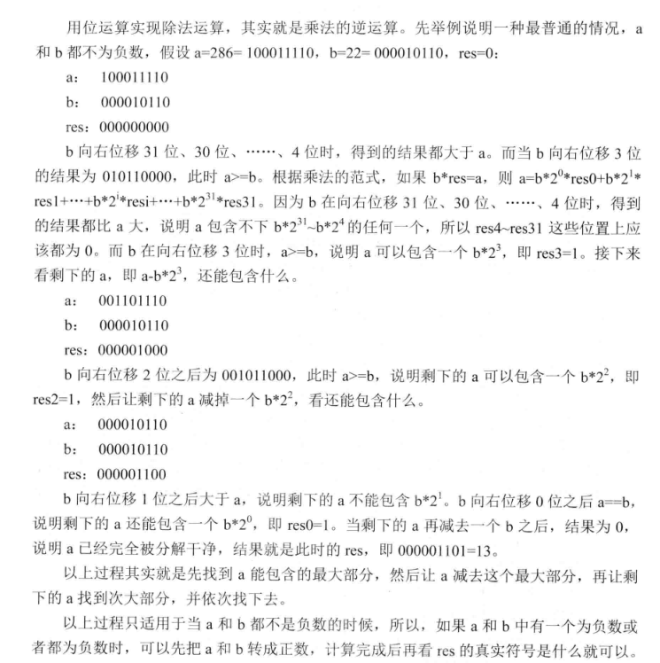
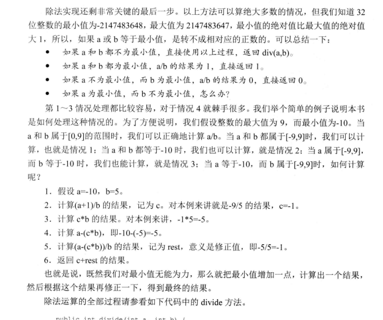

<!DOCTYPE html>
<html lang="zh">
<head><meta name="generator" content="Hexo 3.8.0">
    <meta charset="utf-8">
    
    <title>算法专题_位运算 | FEI&#39;s Blog</title>
    
    
        <meta name="keywords" content="ACM">
    
    <meta name="viewport" content="width=device-width, initial-scale=1, maximum-scale=1">
    <meta name="description" content="每种编程语言中都会有相关的位运算操作符，实现二进制的按位运算。 位运算有四种：与(&amp;amp;)，或(|)，非(~),异或(^) 熟悉每种位运算的特点，是做与位运算有关的题目的基础。">
<meta name="keywords" content="ACM">
<meta property="og:type" content="article">
<meta property="og:title" content="算法专题_位运算">
<meta property="og:url" content="http://ff120.github.io/hexoblog/2017/03/21/技术/数据结构和算法/算法专题_位运算/index.html">
<meta property="og:site_name" content="FEI&#39;s Blog">
<meta property="og:description" content="每种编程语言中都会有相关的位运算操作符，实现二进制的按位运算。 位运算有四种：与(&amp;amp;)，或(|)，非(~),异或(^) 熟悉每种位运算的特点，是做与位运算有关的题目的基础。">
<meta property="og:locale" content="zh-Hans">
<meta property="og:image" content="http://ff120.github.io/hexoblog/2017/03/21/技术/数据结构和算法/算法专题_位运算/2017-03-21_222908.png">
<meta property="og:image" content="http://ff120.github.io/hexoblog/2017/03/21/技术/数据结构和算法/算法专题_位运算/2017-03-21_223709.png">
<meta property="og:image" content="http://ff120.github.io/hexoblog/2017/03/21/技术/数据结构和算法/算法专题_位运算/2017-03-21_223758.png">
<meta property="og:updated_time" content="2019-03-28T00:54:56.412Z">
<meta name="twitter:card" content="summary">
<meta name="twitter:title" content="算法专题_位运算">
<meta name="twitter:description" content="每种编程语言中都会有相关的位运算操作符，实现二进制的按位运算。 位运算有四种：与(&amp;amp;)，或(|)，非(~),异或(^) 熟悉每种位运算的特点，是做与位运算有关的题目的基础。">
<meta name="twitter:image" content="http://ff120.github.io/hexoblog/2017/03/21/技术/数据结构和算法/算法专题_位运算/2017-03-21_222908.png">
    

    
        <link rel="alternate" href="/atom.xml" title="FEI&#39;s Blog" type="application/atom+xml">
    

    
        <link rel="icon" href="/hexoblog/favicon.ico">
    

    <link rel="stylesheet" href="/hexoblog/libs/font-awesome/css/font-awesome.min.css">
    <link rel="stylesheet" href="/hexoblog/libs/open-sans/styles.css">
    <link rel="stylesheet" href="/hexoblog/libs/source-code-pro/styles.css">

    <link rel="stylesheet" href="/hexoblog/css/style.css">
    <script src="/hexoblog/libs/jquery/2.1.3/jquery.min.js"></script>
    <script src="/hexoblog/libs/jquery/plugins/cookie/1.4.1/jquery.cookie.js"></script>
    
    
        <link rel="stylesheet" href="/hexoblog/libs/lightgallery/css/lightgallery.min.css">
    
    
        <link rel="stylesheet" href="/hexoblog/libs/justified-gallery/justifiedGallery.min.css">
    
    
    
    


    
        <script async src="//busuanzi.ibruce.info/busuanzi/2.3/busuanzi.pure.mini.js"></script>
    
</head>
</html>
<body>
    <div id="container">
        <header id="header">
    <div id="header-main" class="header-inner">
        <div class="outer">
            <a href="/hexoblog/" id="logo">
                <i class="logo"></i>
                <span class="site-title">FEI&#39;s Blog</span>
            </a>
            <nav id="main-nav">
                
                    <a class="main-nav-link" href="/hexoblog/">首页</a>
                
                    <a class="main-nav-link" href="/hexoblog/archives">归档</a>
                
                    <a class="main-nav-link" href="/hexoblog/categories">分类</a>
                
                    <a class="main-nav-link" href="/hexoblog/tags">标签</a>
                
                    <a class="main-nav-link" href="/hexoblog/about">关于</a>
                
            </nav>
            
            <div id="search-form-wrap">

    <form class="search-form">
        <input type="text" class="ins-search-input search-form-input" placeholder="Rechercher">
        <button type="submit" class="search-form-submit"></button>
    </form>
    <div class="ins-search">
    <div class="ins-search-mask"></div>
    <div class="ins-search-container">
        <div class="ins-input-wrapper">
            <input type="text" class="ins-search-input" placeholder="Type something...">
            <span class="ins-close ins-selectable"><i class="fa fa-times-circle"></i></span>
        </div>
        <div class="ins-section-wrapper">
            <div class="ins-section-container"></div>
        </div>
    </div>
</div>
<script>
(function (window) {
    var INSIGHT_CONFIG = {
        TRANSLATION: {
            POSTS: 'Articles',
            PAGES: 'Pages',
            CATEGORIES: 'Catégories',
            TAGS: 'Tags',
            UNTITLED: '(Untitled)',
        },
        ROOT_URL: '/hexoblog/',
        CONTENT_URL: '/hexoblog/content.json',
    };
    window.INSIGHT_CONFIG = INSIGHT_CONFIG;
})(window);
</script>
<script src="/hexoblog/js/insight.js"></script>

</div>
        </div>
    </div>
    <div id="main-nav-mobile" class="header-sub header-inner">
        <table class="menu outer">
            <tr>
                
                    <td><a class="main-nav-link" href="/hexoblog/">首页</a></td>
                
                    <td><a class="main-nav-link" href="/hexoblog/archives">归档</a></td>
                
                    <td><a class="main-nav-link" href="/hexoblog/categories">分类</a></td>
                
                    <td><a class="main-nav-link" href="/hexoblog/tags">标签</a></td>
                
                    <td><a class="main-nav-link" href="/hexoblog/about">关于</a></td>
                
                <td>
                    
    <div class="search-form">
        <input type="text" class="ins-search-input search-form-input" placeholder="Rechercher">
    </div>

                </td>
            </tr>
        </table>
    </div>
</header>

        <div class="outer">
            
            
                <aside id="sidebar">
   
        
    <div class="widget-wrap" id="categories">
        <h3 class="widget-title">
            <span>Catégories</span>
            &nbsp;
            <a id="allExpand" href="#">
                <i class="fa fa-angle-double-down fa-2x"></i>
            </a>
        </h3>
        
        
        
         <ul class="unstyled" id="tree"> 
                    <li class="directory">
                        <a href="#" data-role="directory">
                            <i class="fa fa-folder"></i>
                            &nbsp;
                            心理学
                        </a>
                         <ul class="unstyled" id="tree"> 
                    <li class="directory">
                        <a href="#" data-role="directory">
                            <i class="fa fa-folder"></i>
                            &nbsp;
                            记忆魔法
                        </a>
                         <ul class="unstyled" id="tree">  <li class="file"><a href="/hexoblog/2019/04/03/心理学/记忆魔法/代码记忆法/">代码记忆法</a></li>  </ul> 
                    </li> 
                     </ul> 
                    </li> 
                    
                    <li class="directory open">
                        <a href="#" data-role="directory">
                            <i class="fa fa-folder-open"></i>
                            &nbsp;
                            技术
                        </a>
                         <ul class="unstyled" id="tree"> 
                    <li class="directory">
                        <a href="#" data-role="directory">
                            <i class="fa fa-folder"></i>
                            &nbsp;
                            Web开发
                        </a>
                         <ul class="unstyled" id="tree">  <li class="file"><a href="/hexoblog/2016/06/11/技术/Web开发/后台开发_How-to-install-Laravel-framework/">How to install Laravel framework</a></li>  <li class="file"><a href="/hexoblog/2016/06/11/技术/Web开发/后台开发_laravel-4-note-01/">laravel 4 note 01</a></li>  <li class="file"><a href="/hexoblog/2016/06/11/技术/Web开发/后台开发_Make-phpStorm-friendly-to-laravel/">Make phpStorm friendly to laravel</a></li>  <li class="file"><a href="/hexoblog/2016/06/11/技术/Web开发/后台开发_sublime-Text-tricks/">sublime Text tricks</a></li>  <li class="file"><a href="/hexoblog/2016/06/11/技术/Web开发/后台开发_think-php-note-01/">think php note 01</a></li>  <li class="file"><a href="/hexoblog/2016/06/11/技术/Web开发/后台开发_think-php-note-02/">think php note 02</a></li>  <li class="file"><a href="/hexoblog/2016/06/11/技术/Web开发/后台开发_think-php-note-03/">think php note 03</a></li>  <li class="file"><a href="/hexoblog/2016/06/11/技术/Web开发/后台开发_PHP编译less文件-lessphp的使用/">PHP编译less文件-lessphp的使用</a></li>  <li class="file"><a href="/hexoblog/2016/06/11/技术/Web开发/后台开发_Lavarel-后台组件frozenode的使用/">Lavarel 后台组件frozenode的使用</a></li>  <li class="file"><a href="/hexoblog/2016/06/11/技术/Web开发/后台开发_Linux常用命令/">Linux常用命令</a></li>  <li class="file"><a href="/hexoblog/2016/06/11/技术/Web开发/后台开发_Linux主机之间同步文件/">Linux主机之间同步文件</a></li>  <li class="file"><a href="/hexoblog/2016/06/11/技术/Web开发/后台开发_PHP基本操作/">PHP基本操作</a></li>  <li class="file"><a href="/hexoblog/2016/06/11/技术/Web开发/后台开发_短信验证码的实现/">短信验证码的实现</a></li>  <li class="file"><a href="/hexoblog/2016/06/11/技术/Web开发/后台开发_配置Apache支持使用HTTPS/">配置Apache支持使用HTTPS</a></li>  <li class="file"><a href="/hexoblog/2016/06/11/技术/Web开发/测试_使用Selenium测试UI/">测试_使用Selenium测试UI</a></li>  <li class="file"><a href="/hexoblog/2016/06/11/技术/Web开发/后台开发_PhpStorm常用快捷键/">PhpStorm常用快捷键</a></li>  <li class="file"><a href="/hexoblog/2016/06/11/技术/Web开发/微信开发_微信发送消息PHP-SDK/">微信发送消息PHP SDK</a></li>  <li class="file"><a href="/hexoblog/2016/06/11/技术/Web开发/微信开发_获取地理位置/">微信获取地理位置 </a></li>  <li class="file"><a href="/hexoblog/2016/06/11/技术/Web开发/微信开发_发送模板消息的代码/">微信发送模板消息的代码</a></li>  <li class="file"><a href="/hexoblog/2016/06/11/技术/Web开发/测试_Selenium-定位元素的几种方式/">测试_Selenium定位元素的几种方式</a></li>  <li class="file"><a href="/hexoblog/2016/06/11/技术/Web开发/测试_Selenium-Action/">测试_Selenium Action</a></li>  <li class="file"><a href="/hexoblog/2016/06/11/技术/Web开发/测试_Apache-JMeter的使用/">测试_Apache JMeter的使用</a></li>  <li class="file"><a href="/hexoblog/2016/06/12/技术/Web开发/后台开发_Apache-配置虚拟主机/">Apache 配置虚拟主机</a></li>  <li class="file"><a href="/hexoblog/2016/06/23/技术/Web开发/后台开发_改进PHP的var-dump-方法使之适应显示从数据库中查出来的数据/">改进PHP的var_dump()方法使之适应显示从数据库中查出来的数据</a></li>  <li class="file"><a href="/hexoblog/2016/06/23/技术/Web开发/后台开发_PHP读写XLS/">PHP读写XLS</a></li>  <li class="file"><a href="/hexoblog/2016/06/30/技术/Web开发/前端_jQuery-EasyUI-学习笔记/">JQuery EasyUI 学习笔记</a></li>  <li class="file"><a href="/hexoblog/2016/06/30/技术/Web开发/前端_bootsharp学习笔记/">Bootsharp学习笔记</a></li>  </ul> 
                    </li> 
                    
                    <li class="directory">
                        <a href="#" data-role="directory">
                            <i class="fa fa-folder"></i>
                            &nbsp;
                            专业术语
                        </a>
                         <ul class="unstyled" id="tree">  <li class="file"><a href="/hexoblog/2017/07/24/技术/专业术语/术语/">英语</a></li>  </ul> 
                    </li> 
                    
                    <li class="directory">
                        <a href="#" data-role="directory">
                            <i class="fa fa-folder"></i>
                            &nbsp;
                            大数据
                        </a>
                         <ul class="unstyled" id="tree">  <li class="file"><a href="/hexoblog/2016/06/23/技术/大数据/大数据_Spark环境下的Kmeans-Python实现/">Spark环境下的Kmeans-Python实现</a></li>  <li class="file"><a href="/hexoblog/2017/10/06/技术/大数据/大数据基础框架/">大数据基础框架</a></li>  </ul> 
                    </li> 
                    
                    <li class="directory">
                        <a href="#" data-role="directory">
                            <i class="fa fa-folder"></i>
                            &nbsp;
                            工具
                        </a>
                         <ul class="unstyled" id="tree"> 
                    <li class="directory">
                        <a href="#" data-role="directory">
                            <i class="fa fa-folder"></i>
                            &nbsp;
                            AutoHotKey
                        </a>
                         <ul class="unstyled" id="tree">  <li class="file"><a href="/hexoblog/2018/12/02/技术/工具/AutoHotKey/AutoHotKey非常有用的脚本/">AutoHotKey非常有用的脚本</a></li>  </ul> 
                    </li> 
                    
                    <li class="directory">
                        <a href="#" data-role="directory">
                            <i class="fa fa-folder"></i>
                            &nbsp;
                            Git
                        </a>
                         <ul class="unstyled" id="tree">  <li class="file"><a href="/hexoblog/2017/05/04/技术/工具/Git/GIT的使用01-基本功能/">GIT的使用01-基本功能</a></li>  <li class="file"><a href="/hexoblog/2018/07/29/技术/工具/Git/Git查询手册/">Git 手册</a></li>  </ul> 
                    </li> 
                    
                    <li class="directory">
                        <a href="#" data-role="directory">
                            <i class="fa fa-folder"></i>
                            &nbsp;
                            Hexo
                        </a>
                         <ul class="unstyled" id="tree">  <li class="file"><a href="/hexoblog/2016/06/12/技术/工具/Hexo/Hexo的使用02-同步/">Hexo的使用02-同步</a></li>  <li class="file"><a href="/hexoblog/2016/06/13/技术/工具/Hexo/Hexo的使用01-搭建/">Hexo的使用01-搭建</a></li>  <li class="file"><a href="/hexoblog/2017/04/12/技术/工具/Hexo/Hexo的使用05-Atom编辑器/">Hexo的使用05-Atom编辑器</a></li>  <li class="file"><a href="/hexoblog/2017/04/12/技术/工具/Hexo/Hexo的使用04-数学公式/">Hexo的使用04-数学公式</a></li>  <li class="file"><a href="/hexoblog/2017/05/05/技术/工具/Hexo/Hexo的使用03-迁移/">Hexo的使用03-迁移</a></li>  <li class="file"><a href="/hexoblog/2017/07/17/技术/工具/Hexo/Hexo的使用06-使用gist存储代码片段/">Hexo中使用gist存储代码片段</a></li>  </ul> 
                    </li> 
                    
                    <li class="directory">
                        <a href="#" data-role="directory">
                            <i class="fa fa-folder"></i>
                            &nbsp;
                            Visio
                        </a>
                         <ul class="unstyled" id="tree">  <li class="file"><a href="/hexoblog/2017/05/05/技术/工具/Visio/VISIO的使用01-基础入门/">VISIO的使用01-基础入门</a></li>  </ul> 
                    </li> 
                    
                    <li class="directory">
                        <a href="#" data-role="directory">
                            <i class="fa fa-folder"></i>
                            &nbsp;
                            图片处理
                        </a>
                         <ul class="unstyled" id="tree">  <li class="file"><a href="/hexoblog/2017/05/05/技术/工具/图片处理/图片处理02-一寸照片/">图片处理02-一寸照片</a></li>  <li class="file"><a href="/hexoblog/2017/05/17/技术/工具/图片处理/图片处理01-合并多张图片/">图片处理01-合并多张图片</a></li>  </ul> 
                    </li> 
                    
                    <li class="directory">
                        <a href="#" data-role="directory">
                            <i class="fa fa-folder"></i>
                            &nbsp;
                            正则表达式
                        </a>
                         <ul class="unstyled" id="tree">  <li class="file"><a href="/hexoblog/2018/07/29/技术/工具/正则表达式/正则表达式/">正则表达式</a></li>  </ul> 
                    </li> 
                    
                    <li class="directory">
                        <a href="#" data-role="directory">
                            <i class="fa fa-folder"></i>
                            &nbsp;
                            编程IDE
                        </a>
                         <ul class="unstyled" id="tree"> 
                    <li class="directory">
                        <a href="#" data-role="directory">
                            <i class="fa fa-folder"></i>
                            &nbsp;
                            Anaconda
                        </a>
                         <ul class="unstyled" id="tree">  <li class="file"><a href="/hexoblog/2017/04/18/技术/工具/编程IDE/Anaconda/Anaconda的使用01-基础/">Anaconda的使用01-基础</a></li>  </ul> 
                    </li> 
                    
                    <li class="directory">
                        <a href="#" data-role="directory">
                            <i class="fa fa-folder"></i>
                            &nbsp;
                            JetBrainsCLion
                        </a>
                         <ul class="unstyled" id="tree">  <li class="file"><a href="/hexoblog/2017/05/04/技术/工具/编程IDE/JetBrainsCLion/JetBrainsCLion的使用01-入门/">JetBrainsCLion的使用01-入门</a></li>  </ul> 
                    </li> 
                    
                    <li class="directory">
                        <a href="#" data-role="directory">
                            <i class="fa fa-folder"></i>
                            &nbsp;
                            VSCode
                        </a>
                         <ul class="unstyled" id="tree">  <li class="file"><a href="/hexoblog/2017/07/24/技术/工具/编程IDE/VSCode/Visual-Studio-Code使用技巧/">Visual Studio Code使用技巧</a></li>  </ul> 
                    </li> 
                     </ul> 
                    </li> 
                    
                    <li class="directory">
                        <a href="#" data-role="directory">
                            <i class="fa fa-folder"></i>
                            &nbsp;
                            网络软件
                        </a>
                         <ul class="unstyled" id="tree">  <li class="file"><a href="/hexoblog/2016/06/12/技术/工具/网络软件/Windows全局代理软件Proxifier/">Windows全局代理软件Proxifier</a></li>  <li class="file"><a href="/hexoblog/2016/06/12/技术/工具/网络软件/Windows手工修改路由表/">Windows手工修改路由表</a></li>  </ul> 
                    </li> 
                     </ul> 
                    </li> 
                    
                    <li class="directory">
                        <a href="#" data-role="directory">
                            <i class="fa fa-folder"></i>
                            &nbsp;
                            数据库
                        </a>
                         <ul class="unstyled" id="tree">  <li class="file"><a href="/hexoblog/2016/06/11/技术/数据库/数据库_Redis入门/">Redis入门</a></li>  <li class="file"><a href="/hexoblog/2016/06/12/技术/数据库/数据库_使用Database-Configuration-Assist-工具创建oracle数据库/">使用Database Configuration Assist 工具创建oracle数据库</a></li>  <li class="file"><a href="/hexoblog/2017/11/02/技术/数据库/SQL/">SQL</a></li>  </ul> 
                    </li> 
                    
                    <li class="directory open">
                        <a href="#" data-role="directory">
                            <i class="fa fa-folder-open"></i>
                            &nbsp;
                            数据结构和算法
                        </a>
                         <ul class="unstyled" id="tree">  <li class="file"><a href="/hexoblog/2017/03/21/技术/数据结构和算法/算法专题_二维数组/">算法专题_二维数组</a></li>  <li class="file"><a href="/hexoblog/2017/03/21/技术/数据结构和算法/算法专题_矩阵和图/">矩阵和用矩阵表示的图的相关问题</a></li>  <li class="file active"><a href="/hexoblog/2017/03/21/技术/数据结构和算法/算法专题_位运算/">算法专题_位运算</a></li>  <li class="file"><a href="/hexoblog/2017/03/23/技术/数据结构和算法/算法专题_链表/">算法专题_链表</a></li>  <li class="file"><a href="/hexoblog/2017/04/05/技术/数据结构和算法/算法专题_动态规划/">算法专题_动态规划</a></li>  <li class="file"><a href="/hexoblog/2017/04/06/技术/数据结构和算法/算法专题_图/">算法专题_图问题</a></li>  <li class="file"><a href="/hexoblog/2017/04/08/技术/数据结构和算法/做过的算法题汇总表/">做过的算法题汇总表</a></li>  <li class="file"><a href="/hexoblog/2017/04/09/技术/数据结构和算法/算法专题_二叉树/">算法专题_二叉树</a></li>  <li class="file"><a href="/hexoblog/2017/04/09/技术/数据结构和算法/算法专题_通用树结构/">算法专题_通用树结构</a></li>  <li class="file"><a href="/hexoblog/2017/04/10/技术/数据结构和算法/算法专题_大数据和空间限制/">算法专题_大数据和空间限制</a></li>  <li class="file"><a href="/hexoblog/2017/04/10/技术/数据结构和算法/算法专题_排列组合/">算法专题_排列组合</a></li>  <li class="file"><a href="/hexoblog/2017/04/11/技术/数据结构和算法/本地代码集锦/">本地代码集锦</a></li>  <li class="file"><a href="/hexoblog/2017/04/12/技术/数据结构和算法/算法专题_栈和队列/">算法专题_栈和队列</a></li>  <li class="file"><a href="/hexoblog/2017/04/16/技术/数据结构和算法/算法专题_排序算法/">算法专题_排序算法</a></li>  <li class="file"><a href="/hexoblog/2017/04/17/技术/数据结构和算法/算法专题_算法总结/">算法专题_算法总结</a></li>  <li class="file"><a href="/hexoblog/2017/05/02/技术/数据结构和算法/算法专题_一维数组/">算法专题_一维数组</a></li>  <li class="file"><a href="/hexoblog/2017/05/05/技术/数据结构和算法/算法专题_图之网络流/">算法专题_图之网络流</a></li>  <li class="file"><a href="/hexoblog/2017/05/06/技术/数据结构和算法/算法专题_图之最短路径/">算法专题_图之最短路径</a></li>  <li class="file"><a href="/hexoblog/2017/05/06/技术/数据结构和算法/算法专题_最小生成树/">算法专题_最小生成树</a></li>  <li class="file"><a href="/hexoblog/2017/05/06/技术/数据结构和算法/算法专题_霍夫曼编码/">算法专题_霍夫曼编码(哈夫曼编码)</a></li>  <li class="file"><a href="/hexoblog/2017/05/07/技术/数据结构和算法/Kickstart-Round-B-2017/">Kickstart Round B 2017</a></li>  <li class="file"><a href="/hexoblog/2017/05/08/技术/数据结构和算法/算法专题_模运算/">算法专题_模运算</a></li>  <li class="file"><a href="/hexoblog/2017/05/09/技术/数据结构和算法/算法专题_素数问题/">算法专题_素数问题</a></li>  <li class="file"><a href="/hexoblog/2017/05/11/技术/数据结构和算法/算法专题_计算几何/">算法专题_计算几何</a></li>  <li class="file"><a href="/hexoblog/2017/05/27/技术/数据结构和算法/计蒜之道2017程序设计大赛/">计蒜之道2017程序设计大赛</a></li>  <li class="file"><a href="/hexoblog/2017/05/28/技术/数据结构和算法/算法专题_字符串匹配/">算法专题_字符串匹配</a></li>  <li class="file"><a href="/hexoblog/2017/07/12/技术/数据结构和算法/四等分数组/">四等分数组</a></li>  <li class="file"><a href="/hexoblog/2017/07/12/技术/数据结构和算法/矩阵的遍历/">矩阵的遍历</a></li>  <li class="file"><a href="/hexoblog/2017/07/20/技术/数据结构和算法/N皇后问题/">N皇后问题</a></li>  <li class="file"><a href="/hexoblog/2017/07/23/技术/数据结构和算法/算法专题_线段树/">算法专题_线段树</a></li>  <li class="file"><a href="/hexoblog/2017/07/23/技术/数据结构和算法/算法专题_树状数组/">算法专题_树状数组</a></li>  <li class="file"><a href="/hexoblog/2017/07/23/技术/数据结构和算法/算法专题_并查集/">算法专题_并查集</a></li>  <li class="file"><a href="/hexoblog/2017/07/26/技术/数据结构和算法/算法专题_链表2/">算法专题_链表2</a></li>  <li class="file"><a href="/hexoblog/2017/08/06/技术/数据结构和算法/算法专题_二叉堆/">算法专题_二叉堆</a></li>  <li class="file"><a href="/hexoblog/2017/08/07/技术/数据结构和算法/算法专题_快速排序/">算法专题_快速排序</a></li>  <li class="file"><a href="/hexoblog/2017/08/07/技术/数据结构和算法/算法专题_归并排序/">算法专题_归并排序</a></li>  <li class="file"><a href="/hexoblog/2017/08/13/技术/数据结构和算法/算法专题-hihocoder/">算法专题_hihocoder</a></li>  <li class="file"><a href="/hexoblog/2017/08/17/技术/数据结构和算法/算法专题-贪心法/">算法专题_贪心法</a></li>  <li class="file"><a href="/hexoblog/2017/08/18/技术/数据结构和算法/阿里在线测评-兔子繁殖问题/">阿里笔试</a></li>  <li class="file"><a href="/hexoblog/2017/08/22/技术/数据结构和算法/今日头条-在线编程题/">今日头条_在线编程题</a></li>  <li class="file"><a href="/hexoblog/2017/08/23/技术/数据结构和算法/算法专题-字典树-Trie树/">算法专题_字典树(Trie树)</a></li>  <li class="file"><a href="/hexoblog/2017/09/23/技术/数据结构和算法/算法专题_二叉树2/">算法专题_二叉树2</a></li>  <li class="file"><a href="/hexoblog/2017/09/27/技术/数据结构和算法/手写代码-其他/">手写代码-其他</a></li>  <li class="file"><a href="/hexoblog/2017/10/03/技术/数据结构和算法/算法专题-常见题目/">算法专题_常见题目</a></li>  </ul> 
                    </li> 
                    
                    <li class="directory">
                        <a href="#" data-role="directory">
                            <i class="fa fa-folder"></i>
                            &nbsp;
                            机器学习
                        </a>
                         <ul class="unstyled" id="tree"> 
                    <li class="directory">
                        <a href="#" data-role="directory">
                            <i class="fa fa-folder"></i>
                            &nbsp;
                            深度学习
                        </a>
                         <ul class="unstyled" id="tree">  <li class="file"><a href="/hexoblog/2017/03/22/技术/机器学习/深度学习/深度学习_Theano使用技巧/">深度学习_Theano使用技巧</a></li>  <li class="file"><a href="/hexoblog/2017/04/18/技术/机器学习/深度学习/深度学习_基本概念/">深度学习_基本概念</a></li>  <li class="file"><a href="/hexoblog/2017/04/18/技术/机器学习/深度学习/深度学习_利用神经网络识别手写数字/">深度学习__利用神经网络识别手写数字</a></li>  <li class="file"><a href="/hexoblog/2017/04/19/技术/机器学习/深度学习/深度学习_反向传播算法及简单实例/">深度学习_反向传播算法及简单实例</a></li>  <li class="file"><a href="/hexoblog/2017/04/19/技术/机器学习/深度学习/深度学习_Keras使用技巧/">深度学习_Keras使用技巧</a></li>  <li class="file"><a href="/hexoblog/2017/04/20/技术/机器学习/深度学习/深度学习_使用keras实现autoencoder/">深度学习_使用keras实现autoencoder</a></li>  <li class="file"><a href="/hexoblog/2017/04/20/技术/机器学习/深度学习/深度学习_卷积神经网络/">深度学习_卷积神经网络</a></li>  <li class="file"><a href="/hexoblog/2017/04/27/技术/机器学习/深度学习/深度学习_使用autoencoder自动提取特征/">深度学习_使用autoencoder自动提取特征</a></li>  <li class="file"><a href="/hexoblog/2017/05/10/技术/机器学习/深度学习/深度学习_递归神经网络(RNN)/">深度学习_递归神经网络(RNN)</a></li>  <li class="file"><a href="/hexoblog/2017/05/10/技术/机器学习/深度学习/深度学习_限制波尔茨曼向量机(RBM)/">深度学习_限制波尔茨曼向量机(RBM)</a></li>  <li class="file"><a href="/hexoblog/2017/05/12/技术/机器学习/深度学习/深度学习_TensorFlow使用技巧/">深度学习_TensorFlow使用技巧</a></li>  </ul> 
                    </li> 
                     <li class="file"><a href="/hexoblog/2016/06/16/技术/机器学习/机器学习_Scikit-Learn-ManyClassifier/">同时使用多个分类器(Scikit-Learn)</a></li>  <li class="file"><a href="/hexoblog/2016/06/16/技术/机器学习/机器学习_范数/">机器学习_范数</a></li>  <li class="file"><a href="/hexoblog/2016/06/20/技术/机器学习/机器学习_学习路线/">机器学习_学习路线</a></li>  <li class="file"><a href="/hexoblog/2016/06/20/技术/机器学习/机器学习_手写数字识别/">机器学习_手写数字识别</a></li>  <li class="file"><a href="/hexoblog/2016/07/11/技术/机器学习/机器学习_Matplolib使用技巧/">机器学习_Matplolib使用技巧</a></li>  <li class="file"><a href="/hexoblog/2017/03/22/技术/机器学习/机器学习_人脸识别/">机器学习_人脸识别</a></li>  <li class="file"><a href="/hexoblog/2017/05/04/技术/机器学习/机器学习_Matlab使用技巧/">机器学习_Matlab使用技巧</a></li>  <li class="file"><a href="/hexoblog/2017/05/11/技术/机器学习/机器学习_时间序列预测分析算法/">机器学习_时间序列预测分析算法</a></li>  <li class="file"><a href="/hexoblog/2017/05/14/技术/机器学习/机器学习_Scikit-Learn使用技巧/">深度学习_Scikit-Learn机器学习算法的使用</a></li>  <li class="file"><a href="/hexoblog/2017/05/15/技术/机器学习/机器学习_时间序列预测の广告效果预测/">机器学习_时间序列预测の广告效果预测</a></li>  <li class="file"><a href="/hexoblog/2017/05/15/技术/机器学习/机器学习_算法汇总/">机器学习_算法汇总</a></li>  <li class="file"><a href="/hexoblog/2017/05/17/技术/机器学习/机器学习_Pandas使用技巧/">深度学习_Pandas使用技巧</a></li>  <li class="file"><a href="/hexoblog/2017/05/19/技术/机器学习/机器学习_感知机/">机器学习_感知机</a></li>  <li class="file"><a href="/hexoblog/2017/05/19/技术/机器学习/机器学习_逻辑回归/">机器学习_逻辑回归</a></li>  <li class="file"><a href="/hexoblog/2017/05/22/技术/机器学习/机器学习_损失函数/">机器学习_损失函数</a></li>  <li class="file"><a href="/hexoblog/2017/06/03/技术/机器学习/机器学习_分类器性能的度量/">机器学习_分类器性能的度量</a></li>  <li class="file"><a href="/hexoblog/2017/06/15/技术/机器学习/机器学习_Scipy使用技巧/">机器学习_Scipy使用技巧</a></li>  <li class="file"><a href="/hexoblog/2017/06/15/技术/机器学习/机器学习_Python使用技巧/">深度学习_Python使用技巧</a></li>  <li class="file"><a href="/hexoblog/2017/07/23/技术/机器学习/机器学习-Numpy使用技巧/">机器学习_Numpy使用技巧</a></li>  <li class="file"><a href="/hexoblog/2017/10/15/技术/机器学习/KNN-with-C/">KNN with C++</a></li>  <li class="file"><a href="/hexoblog/2017/11/04/技术/机器学习/机器学习-绪论-基本概念/">机器学习-绪论-基本概念</a></li>  <li class="file"><a href="/hexoblog/2017/11/04/技术/机器学习/机器学习-第一章-逻辑回归/">机器学习-第一章-逻辑回归</a></li>  <li class="file"><a href="/hexoblog/2017/11/04/技术/机器学习/机器学习-第二章-决策树/">机器学习-第二章-决策树</a></li>  <li class="file"><a href="/hexoblog/2017/11/04/技术/机器学习/机器学习-第三章-朴素贝叶斯/">机器学习-第三章-朴素贝叶斯</a></li>  <li class="file"><a href="/hexoblog/2017/11/04/技术/机器学习/机器学习-第四章-支持向量机/">机器学习-第四章-支持向量机</a></li>  <li class="file"><a href="/hexoblog/2017/11/04/技术/机器学习/机器学习-第五章-最近邻/">机器学习-第五章-最近邻</a></li>  <li class="file"><a href="/hexoblog/2017/11/04/技术/机器学习/机器学习-第六章-kmeans/">机器学习-第六章-kmeans</a></li>  <li class="file"><a href="/hexoblog/2017/11/04/技术/机器学习/机器学习-第七章-感知机/">机器学习-第七章-感知机</a></li>  </ul> 
                    </li> 
                    
                    <li class="directory">
                        <a href="#" data-role="directory">
                            <i class="fa fa-folder"></i>
                            &nbsp;
                            编程语言
                        </a>
                         <ul class="unstyled" id="tree"> 
                    <li class="directory">
                        <a href="#" data-role="directory">
                            <i class="fa fa-folder"></i>
                            &nbsp;
                            C++
                        </a>
                         <ul class="unstyled" id="tree">  <li class="file"><a href="/hexoblog/2017/04/07/技术/编程语言/C++/C++语言技巧/">C++语言技巧</a></li>  </ul> 
                    </li> 
                     </ul> 
                    </li> 
                    
                    <li class="directory">
                        <a href="#" data-role="directory">
                            <i class="fa fa-folder"></i>
                            &nbsp;
                            计算机基础
                        </a>
                         <ul class="unstyled" id="tree"> 
                    <li class="directory">
                        <a href="#" data-role="directory">
                            <i class="fa fa-folder"></i>
                            &nbsp;
                            计算机网络
                        </a>
                         <ul class="unstyled" id="tree">  <li class="file"><a href="/hexoblog/2016/06/12/技术/计算机基础/计算机网络/网络_校园网多终端上网方案/">校园网多终端上网方案</a></li>  <li class="file"><a href="/hexoblog/2017/07/12/技术/计算机基础/计算机网络/计算机网络/">计算机网络</a></li>  </ul> 
                    </li> 
                     </ul> 
                    </li> 
                    
                    <li class="directory">
                        <a href="#" data-role="directory">
                            <i class="fa fa-folder"></i>
                            &nbsp;
                            认知神经科学
                        </a>
                         <ul class="unstyled" id="tree">  <li class="file"><a href="/hexoblog/2016/06/12/技术/认知神经科学/文献检索方法/">文献检索方法</a></li>  <li class="file"><a href="/hexoblog/2016/06/12/技术/认知神经科学/参考文献书写格式/">参考文献书写格式</a></li>  <li class="file"><a href="/hexoblog/2016/06/12/技术/认知神经科学/使用Python处理fMRI数据/">使用Python处理fMRI数据</a></li>  <li class="file"><a href="/hexoblog/2016/06/22/技术/认知神经科学/中英文对照/">中英文对照</a></li>  <li class="file"><a href="/hexoblog/2017/01/03/技术/认知神经科学/circos入门教程/">circos入门教程</a></li>  <li class="file"><a href="/hexoblog/2017/03/08/技术/认知神经科学/基于视频的车牌识别和流量统计/">基于视频的车牌识别和流量统计</a></li>  <li class="file"><a href="/hexoblog/2017/03/08/技术/认知神经科学/基于贝叶斯网络和隐性知识的AU识别研究/">基于贝叶斯网络和隐性知识的AU识别研究</a></li>  <li class="file"><a href="/hexoblog/2017/03/09/技术/认知神经科学/基于连接的脑信息解码研究/">基于连接信息的脑信息解码研究</a></li>  <li class="file"><a href="/hexoblog/2017/03/09/技术/认知神经科学/认知神经科学系列目录/">认知神经科学系列目录</a></li>  <li class="file"><a href="/hexoblog/2017/03/20/技术/认知神经科学/多被试多RUN批量预处理(SPM)/">多被试多RUN批量预处理(SPM)</a></li>  <li class="file"><a href="/hexoblog/2017/03/20/技术/认知神经科学/SPM预处理中的常用操作/">SPM预处理中的常用操作</a></li>  <li class="file"><a href="/hexoblog/2017/03/20/技术/认知神经科学/动态因果模型(DCM)的批量定义和估计/">动态因果模型(DCM)的批量定义和估计</a></li>  <li class="file"><a href="/hexoblog/2017/04/13/技术/认知神经科学/使用SPM做Second-Level分析/">使用SPM做Second_Level分析</a></li>  <li class="file"><a href="/hexoblog/2017/04/13/技术/认知神经科学/DCM模型的定义和估计/">DCM模型的定义和估计</a></li>  <li class="file"><a href="/hexoblog/2017/04/14/技术/认知神经科学/XJVIEW的使用技巧/">XJVIEW的使用技巧</a></li>  <li class="file"><a href="/hexoblog/2017/04/14/技术/认知神经科学/SPM中函数的修改和使用/">SPM中函数的修改和使用</a></li>  <li class="file"><a href="/hexoblog/2017/05/02/技术/认知神经科学/fMRI中常用的工具包/">fMRI中常用的工具包</a></li>  <li class="file"><a href="/hexoblog/2017/05/11/技术/认知神经科学/使用3D卷积神经神经网络提取脑成像数据的特征/">使用3D卷积神经神经网络提取脑成像数据的特征</a></li>  <li class="file"><a href="/hexoblog/2017/05/14/技术/认知神经科学/fMRI相关的资源汇总/">fMRI相关的资源汇总</a></li>  <li class="file"><a href="/hexoblog/2017/05/30/技术/认知神经科学/fMRI相关问题汇总/">fMRI相关问题汇总</a></li>  </ul> 
                    </li> 
                     </ul> 
                    </li> 
                    
                    <li class="directory">
                        <a href="#" data-role="directory">
                            <i class="fa fa-folder"></i>
                            &nbsp;
                            收藏夹
                        </a>
                         <ul class="unstyled" id="tree">  <li class="file"><a href="/hexoblog/2017/03/22/收藏夹/博客集锦/">博客收藏</a></li>  </ul> 
                    </li> 
                     </ul> 
    </div>
    <script>
        $(document).ready(function() {
            var iconFolderOpenClass  = 'fa-folder-open';
            var iconFolderCloseClass = 'fa-folder';
            var iconAllExpandClass = 'fa-angle-double-down';
            var iconAllPackClass = 'fa-angle-double-up';
            // Handle directory-tree expansion:
            // 左键单独展开目录
            $(document).on('click', '#categories a[data-role="directory"]', function (event) {
                event.preventDefault();

                var icon = $(this).children('.fa');
                var expanded = icon.hasClass(iconFolderOpenClass);
                var subtree = $(this).siblings('ul');
                icon.removeClass(iconFolderOpenClass).removeClass(iconFolderCloseClass);
                if (expanded) {
                    if (typeof subtree != 'undefined') {
                        subtree.slideUp({ duration: 100 });
                    }
                    icon.addClass(iconFolderCloseClass);
                } else {
                    if (typeof subtree != 'undefined') {
                        subtree.slideDown({ duration: 100 });
                    }
                    icon.addClass(iconFolderOpenClass);
                }
            });
            // 右键展开下属所有目录
            $('#categories a[data-role="directory"]').bind("contextmenu", function(event){
                event.preventDefault();
                
                var icon = $(this).children('.fa');
                var expanded = icon.hasClass(iconFolderOpenClass);
                var listNode = $(this).siblings('ul');
                var subtrees = $.merge(listNode.find('li ul'), listNode);
                var icons = $.merge(listNode.find('.fa'), icon);
                icons.removeClass(iconFolderOpenClass).removeClass(iconFolderCloseClass);
                if(expanded) {
                    subtrees.slideUp({ duration: 100 });
                    icons.addClass(iconFolderCloseClass);
                } else {
                    subtrees.slideDown({ duration: 100 });
                    icons.addClass(iconFolderOpenClass);
                }
            })
            // 展开关闭所有目录按钮
            $(document).on('click', '#allExpand', function (event) {
                event.preventDefault();
                
                var icon = $(this).children('.fa');
                var expanded = icon.hasClass(iconAllExpandClass);
                icon.removeClass(iconAllExpandClass).removeClass(iconAllPackClass);
                if(expanded) {
                    $('#sidebar .fa.fa-folder').removeClass('fa-folder').addClass('fa-folder-open')
                    $('#categories li ul').slideDown({ duration: 100 });
                    icon.addClass(iconAllPackClass);
                } else {
                    $('#sidebar .fa.fa-folder-open').removeClass('fa-folder-open').addClass('fa-folder')
                    $('#categories li ul').slideUp({ duration: 100 });
                    icon.addClass(iconAllExpandClass);
                }
            });  
        });
    </script>

    
    <div id="toTop" class="fa fa-angle-up"></div>
</aside>
            
            <section id="main"><article id="post-技术/数据结构和算法/算法专题_位运算" class="article article-type-post" itemscope="" itemprop="blogPost">
    <div class="article-inner">
        
        
            <header class="article-header">
                
                    <div class="article-meta">
                        
    <div class="article-category">
    	<i class="fa fa-folder"></i>
        <a class="article-category-link" href="/hexoblog/categories/技术/">技术</a><i class="fa fa-angle-right"></i><a class="article-category-link" href="/hexoblog/categories/技术/数据结构和算法/">数据结构和算法</a>
    </div>

                        
    <div class="article-tag">
        <i class="fa fa-tag"></i>
        <a class="tag-link" href="/hexoblog/tags/ACM/">ACM</a>
    </div>

                        
    <div class="article-date">
        <i class="fa fa-calendar"></i>
        <a href="/hexoblog/2017/03/21/技术/数据结构和算法/算法专题_位运算/">
            <time datetime="2017-03-21T03:12:12.000Z" itemprop="datePublished">2017-03-21</time>
        </a>
    </div>


                        
                            <i class="fa fa-bar-chart"></i>
                            <span id="busuanzi_container_site_pv"><span id="busuanzi_value_page_pv"></span></span>    
                        
                        
                            <div class="article-meta-button">
                                <a href="https://github.com/FF120/hexoblog/raw/master/source/_posts/技术/数据结构和算法/算法专题_位运算.md"> Source </a>
                            </div>
                            <div class="article-meta-button">
                                <a href="https://github.com/FF120/hexoblog/edit/master/source/_posts/技术/数据结构和算法/算法专题_位运算.md"> Edit </a>
                            </div>
                            <div class="article-meta-button">
                                <a href="https://github.com/FF120/hexoblog/commits/master/source/_posts/技术/数据结构和算法/算法专题_位运算.md"> History </a>
                            </div>
                        
                    </div>
                
                
    
        <h1 class="article-title" itemprop="name">
            算法专题_位运算
        </h1>
    

            </header>
        
        
        <div class="article-entry" itemprop="articleBody">
        
        
            
                <div id="toc" class="toc-article">
                <strong class="toc-title">Catalogue</strong>
                    <ol class="toc"><li class="toc-item toc-level-2"><a class="toc-link" href="#与"><span class="toc-number">1.</span> <span class="toc-text">与(&amp;)</span></a></li><li class="toc-item toc-level-2"><a class="toc-link" href="#或"><span class="toc-number">2.</span> <span class="toc-text">或(|)</span></a></li><li class="toc-item toc-level-2"><a class="toc-link" href="#非"><span class="toc-number">3.</span> <span class="toc-text">非(~)</span></a></li><li class="toc-item toc-level-2"><a class="toc-link" href="#异或"><span class="toc-number">4.</span> <span class="toc-text">异或(^)</span></a></li><li class="toc-item toc-level-2"><a class="toc-link" href="#除法"><span class="toc-number">5.</span> <span class="toc-text">除法</span></a></li><li class="toc-item toc-level-2"><a class="toc-link" href="#相关的应用"><span class="toc-number">6.</span> <span class="toc-text">相关的应用</span></a><ol class="toc-child"><li class="toc-item toc-level-3"><a class="toc-link" href="#交换两个整数不适用额外的空间"><span class="toc-number">6.1.</span> <span class="toc-text">交换两个整数(不适用额外的空间)</span></a></li><li class="toc-item toc-level-3"><a class="toc-link" href="#不用比较找出两个数中较大的数"><span class="toc-number">6.2.</span> <span class="toc-text">不用比较找出两个数中较大的数</span></a></li><li class="toc-item toc-level-3"><a class="toc-link" href="#不使用任何算术运算只使用位运算实现加减乘除"><span class="toc-number">6.3.</span> <span class="toc-text">不使用任何算术运算只使用位运算实现加减乘除</span></a></li><li class="toc-item toc-level-3"><a class="toc-link" href="#整数的二进制表达中有多少个1"><span class="toc-number">6.4.</span> <span class="toc-text">整数的二进制表达中有多少个1</span></a></li><li class="toc-item toc-level-3"><a class="toc-link" href="#找出一个只出现一次的数字"><span class="toc-number">6.5.</span> <span class="toc-text">找出一个只出现一次的数字</span></a></li><li class="toc-item toc-level-3"><a class="toc-link" href="#找出两个只出现一次的数字"><span class="toc-number">6.6.</span> <span class="toc-text">找出两个只出现一次的数字</span></a></li><li class="toc-item toc-level-3"><a class="toc-link" href="#找出三个只出现一次的数字"><span class="toc-number">6.7.</span> <span class="toc-text">找出三个只出现一次的数字</span></a></li><li class="toc-item toc-level-3"><a class="toc-link" href="#在其他数字都出现k次的数组中找到只出现一次的数"><span class="toc-number">6.8.</span> <span class="toc-text">在其他数字都出现K次的数组中找到只出现一次的数</span></a></li><li class="toc-item toc-level-3"><a class="toc-link" href="#快速的求一个整数的n次方"><span class="toc-number">6.9.</span> <span class="toc-text">快速的求一个整数的N次方</span></a></li></ol></li></ol>
                </div>
            
        
        
            <p>每种编程语言中都会有相关的位运算操作符，实现二进制的按位运算。 位运算有四种：与(&amp;)，或(|)，非(~),异或(^) 熟悉每种位运算的特点，是做与位运算有关的题目的基础。</p>
<a id="more"></a>
<h2 id="与">与(&amp;)</h2>
<ul>
<li><code>0&amp;0=0; 0&amp;1=0; 1&amp;0=0; 1&amp;1=1;</code></li>
<li>仔细观察上面的操作，发现与操作的结果与二进制加法的进位规则非常一致。 <code>0+0=0 ; 0+1=0; 1+0=0; 1+1 = 1;</code> (此处等号后面的数字表示应该的进位)</li>
<li><code>n = n&amp;(n-1)</code> 该操作的效果是把n的最后一个二进制1变为0. 此操作在涉及统计二进制数中1的个数的时候比较有用。</li>
<li><code>n = n&amp;(~n+1)</code> 该操作的效果是把n的最右边的二进制1留下，其余的1全部置0.</li>
<li><code>n = n&amp;(-n)</code> 该操作的效果是得到n的最后一个1</li>
</ul>
<h2 id="或">或(|)</h2>
<ul>
<li><code>0|0=0; 0|1=1; 1|0=1; 1|1=1;</code></li>
<li>``</li>
</ul>
<h2 id="非">非(~)</h2>
<ul>
<li><code>~0=1; ~1=0</code></li>
</ul>
<h2 id="异或">异或(^)</h2>
<ul>
<li><code>0^0=0;1^1=0; 0^1=1;1^0=1;</code></li>
<li>仔细观察上面的操作，发现异或操作的结果与二进制加法(忽略进位的情况下)规则一致。 <code>0+0=0;0+1=1;1+0=1;1+1=0;</code>(此处等号后面的数字是无进位加法的结果)</li>
<li><code>a^0=a; a^a=0; a^a^a=a</code> 偶数个a异或的结果是0，奇数个a异或的结果是a.</li>
<li><code>a^(a^b)=b;b^(a^b)=a;</code> 此规则可以用来交换两个数字，无需额外的空间</li>
</ul>
<h2 id="除法">除法</h2>
<ul>
<li><code>(a)/(a &amp; (-a));</code>, 去除末尾的若干个0. 例如 1011000 -&gt; 1011</li>
</ul>
<h2 id="相关的应用">相关的应用</h2>
<h3 id="交换两个整数不适用额外的空间">交换两个整数(不适用额外的空间)</h3>
<p>此题是典型的利用异或运算的性质求解的题。 - <code>a^a = 0;  a^0 = a;</code> - <code>a^(a^b) = b ; b^(a^b) = a ;</code> 具体的交换代码如下： <figure class="highlight c++"><table><tr><td class="gutter"><pre><span class="line">1</span><br><span class="line">2</span><br><span class="line">3</span><br></pre></td><td class="code"><pre><span class="line">a = a^b;</span><br><span class="line">b = a^b;</span><br><span class="line">a = a^b;</span><br></pre></td></tr></table></figure></p>
<p>分析一下这三行代码，我们把原来的a,b 记作a1,b1;把交换之后的记作a2,b2;最后要达到的结果是a2=b1;b2=a1; 第一行，<code>a=a^b</code>, 此时a的值已经改变，变成了<code>a^b</code>的值； 第二行变成<code>b = (a^b)^b = a</code>, 此时b的值已经改变，变成了a的值。 第三行，此时的<code>a=a^b</code>,而<code>b=a</code>,所以 <code>a=a^b=(a^b)^a=b</code>,a变成了b的值。 通过分析可以发现，其实充当暂存中间结果的变量是a, a先存储了a^b的值，然后去跟b异或得到a,再跟得到的a异或得到b. 而一般的需要第三个变量做中介的交换思路是首先把b存起来，因为在b=a时，b的值丢失了。之所以利用异或不怕b的值丢失， 是因为可以利用得到的a再次得到b.</p>
<h3 id="不用比较找出两个数中较大的数">不用比较找出两个数中较大的数</h3>
<p> 不用比较运算符比较两个数字的大小，可以使用减法运算符。 如果也不能使用减法运算符，可以考虑只使用位运算实现减法运算。 <code>a-b = c</code> 如果<code>c&gt;0,a&gt;b;</code> 如果<code>c&lt;0;c&lt;b;</code>但是不幸的是，还是用到的<code>&lt;</code>或者<code>&gt;</code> C++中有函数<code>signbit(x)</code>可以返回x的符号，使用的时候需要注意包含头文件<code>#include &lt;cmath&gt;</code> 另外需要注意的问题就是整数的溢出，<code>a-b</code>如果a是正数，b是负数，就会变成两个整数相加，这时候如果二者都接近 INT类型表示的边界，就会超出能够表示的最大的数的范围，产生正溢出。 同理，如果a是负数,b是正数，同样可能超出 能够表示的最小的负数的范围，产生负溢出。 幸运的是，如果知道二者异号，很容易判断谁大谁小。所以先判断是否是异号比较好，可以防止数据溢出产生错误。</p>
<figure class="highlight c"><table><tr><td class="gutter"><pre><span class="line">1</span><br><span class="line">2</span><br><span class="line">3</span><br><span class="line">4</span><br><span class="line">5</span><br><span class="line">6</span><br><span class="line">7</span><br><span class="line">8</span><br><span class="line">9</span><br><span class="line">10</span><br><span class="line">11</span><br><span class="line">12</span><br><span class="line">13</span><br><span class="line">14</span><br><span class="line">15</span><br><span class="line">16</span><br><span class="line">17</span><br><span class="line">18</span><br><span class="line">19</span><br></pre></td><td class="code"><pre><span class="line"><span class="meta">#<span class="meta-keyword">include</span> <span class="meta-string">&lt;iostream&gt;</span></span></span><br><span class="line"><span class="meta">#<span class="meta-keyword">include</span> <span class="meta-string">&lt;cmath&gt;</span></span></span><br><span class="line"><span class="keyword">using</span> <span class="keyword">namespace</span> <span class="built_in">std</span>;</span><br><span class="line"><span class="comment">//找出两个数中较大的数字，不使用任何比较运算</span></span><br><span class="line"><span class="comment">// 不比较两个元素，只能做差</span></span><br><span class="line"><span class="comment">//两个数做差或涉及到溢出的问题</span></span><br><span class="line"><span class="comment">// a - b 如果a 接近最大的整数，b接近最大的负数， 就会溢出</span></span><br><span class="line"><span class="comment">// a- b 如果a 接近最大的负数，b接近最大的正数，也会溢出</span></span><br><span class="line"><span class="comment">//所以先判断正负，再做差</span></span><br><span class="line"><span class="function"><span class="keyword">int</span> <span class="title">getMax</span><span class="params">(<span class="keyword">int</span> a,<span class="keyword">int</span> b)</span></span>&#123;</span><br><span class="line">    <span class="keyword">if</span>(signbit(a) &amp;&amp; !signbit(b))&#123;<span class="keyword">return</span> b;&#125;</span><br><span class="line">    <span class="keyword">if</span>(signbit(b) &amp;&amp; !signbit(a))&#123;<span class="keyword">return</span> a;&#125;</span><br><span class="line">    <span class="keyword">if</span>(signbit(a-b))&#123;<span class="keyword">return</span> b;&#125;</span><br><span class="line">    <span class="keyword">return</span> a;</span><br><span class="line">&#125;</span><br><span class="line"><span class="function"><span class="keyword">int</span> <span class="title">main</span><span class="params">()</span> </span>&#123;</span><br><span class="line">    <span class="built_in">cout</span>&lt;&lt;getMax(<span class="number">5435651</span>,<span class="number">-2393</span>)&lt;&lt;<span class="built_in">endl</span>;</span><br><span class="line">    <span class="keyword">return</span> <span class="number">0</span>;</span><br><span class="line">&#125;</span><br></pre></td></tr></table></figure>
<h3 id="不使用任何算术运算只使用位运算实现加减乘除">不使用任何算术运算只使用位运算实现加减乘除</h3>
<ul>
<li><p>加法运算的思路 不考虑进位的情况下， <code>a^b</code> 就是<code>a+b</code>的结果 只考虑进位的情况下， <code>(a&amp;b)&lt;&lt;1</code> 就是<code>a+b</code>的结果 所以综合二者，就能得到加法的正确答案。</p></li>
<li><p>减法的思路 <code>a-b = a+(-b);</code> 而<code>-b = ~b+1</code> 每个二进制位取反再加1.</p></li>
<li><p>乘法运算的思路 a*b 把b看成二进制位，每次把a左移（相当于乘以2），看b对应的位置上是否是1， 是1就将结果加到最终的结果上，是0就不加，返回最后的结果。</p></li>
<li><p>除法运算的思路   <figure class="highlight c++"><table><tr><td class="gutter"><pre><span class="line">1</span><br><span class="line">2</span><br><span class="line">3</span><br><span class="line">4</span><br><span class="line">5</span><br><span class="line">6</span><br><span class="line">7</span><br><span class="line">8</span><br><span class="line">9</span><br><span class="line">10</span><br><span class="line">11</span><br><span class="line">12</span><br><span class="line">13</span><br><span class="line">14</span><br><span class="line">15</span><br><span class="line">16</span><br><span class="line">17</span><br><span class="line">18</span><br><span class="line">19</span><br><span class="line">20</span><br><span class="line">21</span><br><span class="line">22</span><br><span class="line">23</span><br><span class="line">24</span><br><span class="line">25</span><br><span class="line">26</span><br><span class="line">27</span><br><span class="line">28</span><br><span class="line">29</span><br><span class="line">30</span><br><span class="line">31</span><br><span class="line">32</span><br><span class="line">33</span><br><span class="line">34</span><br><span class="line">35</span><br><span class="line">36</span><br><span class="line">37</span><br><span class="line">38</span><br><span class="line">39</span><br><span class="line">40</span><br><span class="line">41</span><br><span class="line">42</span><br><span class="line">43</span><br><span class="line">44</span><br><span class="line">45</span><br><span class="line">46</span><br><span class="line">47</span><br><span class="line">48</span><br><span class="line">49</span><br><span class="line">50</span><br><span class="line">51</span><br><span class="line">52</span><br><span class="line">53</span><br></pre></td><td class="code"><pre><span class="line"><span class="meta">#<span class="meta-keyword">include</span> <span class="meta-string">&lt;iostream&gt;</span></span></span><br><span class="line"><span class="keyword">using</span> <span class="keyword">namespace</span> <span class="built_in">std</span>;</span><br><span class="line"><span class="comment">/**</span></span><br><span class="line"><span class="comment"> * 用位运算实现加法运算</span></span><br><span class="line"><span class="comment"> * 按照二进制位加法 0 + 0 = 0 | 0 + 1 = 1 | 1 + 1 = 0</span></span><br><span class="line"><span class="comment"> * 如果不考虑进位，该规则正好与异或相同</span></span><br><span class="line"><span class="comment"> *</span></span><br><span class="line"><span class="comment"> * 考虑什么时候会产生进位 0 + 0 = 0 0 + 1 = 0 1+ 1 = 1</span></span><br><span class="line"><span class="comment"> * 该规则正好与  &amp; 运算一致</span></span><br><span class="line"><span class="comment"> *</span></span><br><span class="line"><span class="comment"> * 所以分别考虑无进位相加和只考虑进位的结果  加在一起就好了。</span></span><br><span class="line"><span class="comment"> * @return</span></span><br><span class="line"><span class="comment"> */</span></span><br><span class="line"><span class="function"><span class="keyword">int</span> <span class="title">add</span><span class="params">(<span class="keyword">int</span> a,<span class="keyword">int</span> b)</span></span>&#123;</span><br><span class="line">    <span class="keyword">int</span> sum =a ;</span><br><span class="line">    <span class="keyword">while</span>(b!=<span class="number">0</span>)&#123;</span><br><span class="line">        sum = a ^ b;</span><br><span class="line">        b = (a &amp; b) &lt;&lt; <span class="number">1</span>;</span><br><span class="line">        a = sum;</span><br><span class="line">    &#125;</span><br><span class="line">    <span class="keyword">return</span> a;</span><br><span class="line">&#125;</span><br><span class="line"><span class="comment">/**</span></span><br><span class="line"><span class="comment"> * 用位实现减法运算， 不能用-运算符</span></span><br><span class="line"><span class="comment"> * @param a</span></span><br><span class="line"><span class="comment"> * @param b</span></span><br><span class="line"><span class="comment"> * @return</span></span><br><span class="line"><span class="comment"> */</span></span><br><span class="line"><span class="function"><span class="keyword">int</span> <span class="title">minus2</span><span class="params">(<span class="keyword">int</span> a,<span class="keyword">int</span> b)</span></span>&#123;</span><br><span class="line">    <span class="comment">// a - b == a + (-b)</span></span><br><span class="line">    <span class="comment">// -b == ~b + 1</span></span><br><span class="line">    add(a,add(~b,<span class="number">1</span>));</span><br><span class="line">&#125;</span><br><span class="line"><span class="comment">/**</span></span><br><span class="line"><span class="comment"> * 用位运算实现乘法</span></span><br><span class="line"><span class="comment"> *</span></span><br><span class="line"><span class="comment"> * @return</span></span><br><span class="line"><span class="comment"> */</span></span><br><span class="line"><span class="function"><span class="keyword">int</span> <span class="title">cheng</span><span class="params">(<span class="keyword">int</span> a,<span class="keyword">int</span> b)</span></span>&#123;</span><br><span class="line">    <span class="keyword">int</span> sum = <span class="number">0</span>;</span><br><span class="line">    <span class="keyword">while</span>(b!=<span class="number">0</span>)&#123;</span><br><span class="line">        <span class="keyword">if</span>(b&amp;<span class="number">1</span>!=<span class="number">0</span>)&#123;</span><br><span class="line">            sum = add(sum,a);</span><br><span class="line">        &#125;</span><br><span class="line">        a&lt;&lt;=<span class="number">1</span>;</span><br><span class="line">        b&gt;&gt;=<span class="number">1</span>;</span><br><span class="line">    &#125;</span><br><span class="line">&#125;</span><br><span class="line"></span><br><span class="line"><span class="function"><span class="keyword">int</span> <span class="title">main</span><span class="params">()</span> </span>&#123;</span><br><span class="line">    <span class="built_in">std</span>::<span class="built_in">cout</span> &lt;&lt; cheng(<span class="number">-20</span>,<span class="number">500</span>) &lt;&lt; <span class="built_in">std</span>::<span class="built_in">endl</span>;</span><br><span class="line">    <span class="keyword">return</span> <span class="number">0</span>;</span><br><span class="line">&#125;</span><br></pre></td></tr></table></figure></p></li>
</ul>
<h3 id="整数的二进制表达中有多少个1">整数的二进制表达中有多少个1</h3>
<p>题目： 给定一个32位的整数，可0，可正，可负，返回该整数的二进制表达中有多少个1. 第一种方法是每次右移，然后统计1的个数，这种方法需要统计32次。 第二种方法只有原来数字中有多少个1有关，1越少速度越快。 n = n&amp;(n-1) 该操作可以抹掉n最右边的1 n = n&amp;(~n+1) 该操作可以得到n最右侧的1 使用上面的任意一种操作，可以设计算法实现只与1的个数有关的算法。 <figure class="highlight c++"><table><tr><td class="gutter"><pre><span class="line">1</span><br><span class="line">2</span><br><span class="line">3</span><br><span class="line">4</span><br><span class="line">5</span><br><span class="line">6</span><br><span class="line">7</span><br><span class="line">8</span><br><span class="line">9</span><br><span class="line">10</span><br><span class="line">11</span><br><span class="line">12</span><br><span class="line">13</span><br><span class="line">14</span><br><span class="line">15</span><br><span class="line">16</span><br><span class="line">17</span><br><span class="line">18</span><br><span class="line">19</span><br><span class="line">20</span><br><span class="line">21</span><br><span class="line">22</span><br><span class="line">23</span><br><span class="line">24</span><br><span class="line">25</span><br><span class="line">26</span><br><span class="line">27</span><br><span class="line">28</span><br><span class="line">29</span><br><span class="line">30</span><br><span class="line">31</span><br><span class="line">32</span><br><span class="line">33</span><br><span class="line">34</span><br></pre></td><td class="code"><pre><span class="line"><span class="meta">#<span class="meta-keyword">include</span> <span class="meta-string">&lt;iostream&gt;</span></span></span><br><span class="line"><span class="meta">#<span class="meta-keyword">include</span> <span class="meta-string">&lt;cmath&gt;</span></span></span><br><span class="line"><span class="keyword">using</span> <span class="keyword">namespace</span> <span class="built_in">std</span>;</span><br><span class="line"><span class="comment">/**</span></span><br><span class="line"><span class="comment"> * 统计整数的二进制表达中有多少个1</span></span><br><span class="line"><span class="comment"> * @return</span></span><br><span class="line"><span class="comment"> */</span></span><br><span class="line"><span class="function"><span class="keyword">int</span> <span class="title">getSum</span><span class="params">(<span class="keyword">int</span> a)</span></span>&#123;</span><br><span class="line">   <span class="keyword">int</span> sum = <span class="number">0</span>;</span><br><span class="line">    <span class="keyword">while</span>(a!=<span class="number">0</span>)&#123;</span><br><span class="line">        <span class="keyword">if</span>(a&amp;<span class="number">1</span> == <span class="number">1</span>)&#123;</span><br><span class="line">            sum++;</span><br><span class="line">        &#125;</span><br><span class="line">        a = a&gt;&gt;<span class="number">1</span>;</span><br><span class="line">    &#125;</span><br><span class="line">    <span class="keyword">return</span> sum;</span><br><span class="line">&#125;</span><br><span class="line"><span class="comment">/**</span></span><br><span class="line"><span class="comment"> * n&amp;(n-1)的作用就是消除n最右边的1</span></span><br><span class="line"><span class="comment"> * @param a</span></span><br><span class="line"><span class="comment"> * @return</span></span><br><span class="line"><span class="comment"> */</span></span><br><span class="line"><span class="function"><span class="keyword">int</span> <span class="title">getSumA</span><span class="params">(<span class="keyword">int</span> a)</span></span>&#123;</span><br><span class="line">    <span class="keyword">int</span> sum = <span class="number">0</span>;</span><br><span class="line">    <span class="keyword">while</span>(a!=<span class="number">0</span>)&#123;</span><br><span class="line">        a = a&amp;(a<span class="number">-1</span>);</span><br><span class="line">        ++sum;</span><br><span class="line">    &#125;</span><br><span class="line">    <span class="keyword">return</span> sum;</span><br><span class="line">&#125;</span><br><span class="line"><span class="function"><span class="keyword">int</span> <span class="title">main</span><span class="params">()</span> </span>&#123;</span><br><span class="line">    <span class="built_in">std</span>::<span class="built_in">cout</span> &lt;&lt; getSumA(<span class="number">8</span>)&lt;&lt; <span class="built_in">std</span>::<span class="built_in">endl</span>;</span><br><span class="line">    <span class="keyword">return</span> <span class="number">0</span>;</span><br><span class="line">&#125;</span><br></pre></td></tr></table></figure></p>
<h3 id="找出一个只出现一次的数字">找出一个只出现一次的数字</h3>
<p>题目： 一个整数数组中，只有一个数字只出现了一次，其他所有数字都出现的两次，找出这个出现一次的数字。 变种： 一个整数数组中，只有一个数字出现了奇数次，其他所有的数字都出现了偶数次，找出这个出现奇数次的数字。 了解异或运算特点，<code>a^a = 0;  a^0 = a; a^a^a = a;</code> 出现偶数次的数在异或运算下都是0，出现奇数次的数异或之后就是它本身。 <figure class="highlight c++"><table><tr><td class="gutter"><pre><span class="line">1</span><br><span class="line">2</span><br><span class="line">3</span><br><span class="line">4</span><br><span class="line">5</span><br><span class="line">6</span><br><span class="line">7</span><br><span class="line">8</span><br><span class="line">9</span><br><span class="line">10</span><br><span class="line">11</span><br><span class="line">12</span><br><span class="line">13</span><br></pre></td><td class="code"><pre><span class="line"><span class="comment">/**</span></span><br><span class="line"><span class="comment"> * 只有一个数字出现了奇数次，其余的数字都出现了偶数次，找出这个数字</span></span><br><span class="line"><span class="comment"> * 找出这个数字</span></span><br><span class="line"><span class="comment"> * @param v</span></span><br><span class="line"><span class="comment"> * @return</span></span><br><span class="line"><span class="comment"> */</span></span><br><span class="line"><span class="function"><span class="keyword">int</span> <span class="title">research</span><span class="params">(<span class="built_in">vector</span>&lt;<span class="keyword">int</span>&gt; v)</span></span>&#123;</span><br><span class="line">    <span class="keyword">int</span> re = <span class="number">0</span>;</span><br><span class="line">    <span class="keyword">for</span>(<span class="keyword">auto</span> a:v)&#123;</span><br><span class="line">        re = re ^ a;</span><br><span class="line">    &#125;</span><br><span class="line">    <span class="keyword">return</span> re;</span><br><span class="line">&#125;</span><br></pre></td></tr></table></figure></p>
<p>这个题目还可以从另外一个角度去理解，K个K进制的数字如果忽略进位相加的话，结果一定是0.那么nK个K进制的数字相加的话，结果 也一定是0. 而异或恰好是二进制无进位相加的实现。 了解了这一点，如果我们能够像异或这样，实现任意的K进制数无进位相加的结果，就可以解决下面这样的问题： 在其他数字都出现K次的数组中找出只出现一次的数字。</p>
<h3 id="找出两个只出现一次的数字">找出两个只出现一次的数字</h3>
<p>题目：一个整数数组中，只有两个数字只出现了一次，其他所有数字都出现的两次，找出这两个数字。 思路：异或一遍之后得到的结果是a^b， a,b必然有一位是不同的(如果结果是0，那么a=b，说明并没有两个只出现一次的数字)。 根据这个二进制位将原来的数据分成两组，分别异或一遍即可得到这两个数字。 <figure class="highlight c++"><table><tr><td class="gutter"><pre><span class="line">1</span><br><span class="line">2</span><br><span class="line">3</span><br><span class="line">4</span><br><span class="line">5</span><br><span class="line">6</span><br><span class="line">7</span><br><span class="line">8</span><br><span class="line">9</span><br><span class="line">10</span><br><span class="line">11</span><br><span class="line">12</span><br><span class="line">13</span><br><span class="line">14</span><br><span class="line">15</span><br><span class="line">16</span><br><span class="line">17</span><br><span class="line">18</span><br><span class="line">19</span><br><span class="line">20</span><br><span class="line">21</span><br><span class="line">22</span><br></pre></td><td class="code"><pre><span class="line"><span class="comment">/**</span></span><br><span class="line"><span class="comment"> * 只有两个数出现了奇数次，找出这两个数</span></span><br><span class="line"><span class="comment"> * @param v</span></span><br><span class="line"><span class="comment"> * @return</span></span><br><span class="line"><span class="comment"> */</span></span><br><span class="line"><span class="built_in">vector</span>&lt;<span class="keyword">int</span>&gt; research2(<span class="built_in">vector</span>&lt;<span class="keyword">int</span>&gt; v)&#123;</span><br><span class="line">    <span class="built_in">vector</span>&lt;<span class="keyword">int</span>&gt; result;</span><br><span class="line">    <span class="keyword">int</span> r1 = <span class="number">0</span>;</span><br><span class="line">    <span class="keyword">for</span>(<span class="keyword">auto</span> i : v)&#123;</span><br><span class="line">        r1 = r1 ^ i;</span><br><span class="line">    &#125;</span><br><span class="line">    <span class="keyword">int</span> bit1 = r1 &amp; (~r1 +<span class="number">1</span>);</span><br><span class="line">    <span class="keyword">int</span> ab = <span class="number">0</span>; <span class="comment">// 现在r1保存的是两个出现奇数次的数的异或</span></span><br><span class="line">    <span class="keyword">for</span>(<span class="keyword">auto</span> j : v)&#123;</span><br><span class="line">        <span class="keyword">if</span>((j&amp;bit1) != <span class="number">0</span>)&#123;</span><br><span class="line">           ab = ab ^ j;</span><br><span class="line">        &#125;</span><br><span class="line">    &#125;</span><br><span class="line">    result.push_back(ab);</span><br><span class="line">    result.push_back(ab^r1);</span><br><span class="line">    <span class="keyword">return</span> result;</span><br><span class="line">&#125;</span><br></pre></td></tr></table></figure></p>
<h3 id="找出三个只出现一次的数字">找出三个只出现一次的数字</h3>
<p>题目：一个整数数组中，只有三个数字只出现了一次，其他所有数字都出现的两次，找出这三个数字。 思路：整体异或一遍，得到<code>x=a^b^c</code>. 设<code>f(x)</code>表示获取x的最后一位二进制1，例如<code>f(10100)=00100</code>. <code>n = f(x^a)^f(x^b)^f(x^c)</code>, 设n的最后一个二进制位1在第m位上。则有<code>x^a,x^b,x^c</code>只有一个数字在第m位上是1，其余的两个数字在第m位上都是0. (具体的推导过程参考<a href="http://zhedahht.blog.163.com/blog/static/25411174201283084246412/" target="_blank" rel="noopener">这里</a>).</p>
<p>算法步骤：</p>
<ol style="list-style-type: decimal">
<li><code>abc = 0;  循环一遍：abc^=v[i]</code> , 得到<code>x=a^b^c</code>;</li>
<li><code>g1 = 0; 循环一遍：g1^=getLastOne(abc^v[i]);</code>, 得到上面提到的n.</li>
<li><code>g1 = getLastOne(g1)</code>, 得到分界数字，上面提到的第m位置1的数字。</li>
<li>把所有满足<code>getLastOne( v[i] ^ abc ) == g1</code>条件的分成一组，该组中只包含<code>a,b,c</code>三个数字中的一个数字，异或一遍，得到a.</li>
<li>剩下的就是找到两个数字了。</li>
</ol>
<figure class="highlight c"><table><tr><td class="gutter"><pre><span class="line">1</span><br><span class="line">2</span><br><span class="line">3</span><br><span class="line">4</span><br><span class="line">5</span><br><span class="line">6</span><br><span class="line">7</span><br><span class="line">8</span><br><span class="line">9</span><br><span class="line">10</span><br><span class="line">11</span><br><span class="line">12</span><br><span class="line">13</span><br><span class="line">14</span><br><span class="line">15</span><br><span class="line">16</span><br><span class="line">17</span><br><span class="line">18</span><br><span class="line">19</span><br><span class="line">20</span><br><span class="line">21</span><br><span class="line">22</span><br><span class="line">23</span><br><span class="line">24</span><br><span class="line">25</span><br><span class="line">26</span><br><span class="line">27</span><br><span class="line">28</span><br><span class="line">29</span><br><span class="line">30</span><br><span class="line">31</span><br></pre></td><td class="code"><pre><span class="line"><span class="function"><span class="keyword">int</span> <span class="title">getLastOne</span><span class="params">(<span class="keyword">int</span> n)</span></span>&#123;</span><br><span class="line">    <span class="keyword">return</span> n &amp; -(n<span class="number">-1</span>);</span><br><span class="line">&#125;</span><br><span class="line"><span class="function"><span class="keyword">void</span> <span class="title">solve</span><span class="params">(<span class="built_in">vector</span>&lt;<span class="keyword">int</span>&gt; v,<span class="keyword">int</span> &amp;a,<span class="keyword">int</span> &amp;b,<span class="keyword">int</span> &amp;c)</span></span>&#123;</span><br><span class="line">    <span class="keyword">if</span>(v.size() == <span class="number">0</span>) <span class="keyword">return</span>;</span><br><span class="line">    <span class="keyword">int</span> abc = <span class="number">0</span>;</span><br><span class="line">    <span class="keyword">for</span>(<span class="keyword">int</span> i=<span class="number">0</span>;i&lt;v.size();i++)&#123;</span><br><span class="line">        abc = abc ^ v[i];</span><br><span class="line">    &#125;</span><br><span class="line">    <span class="keyword">int</span> g1 = <span class="number">0</span>;</span><br><span class="line">    <span class="keyword">for</span>(<span class="keyword">int</span> i=<span class="number">0</span>;i&lt;v.size();i++)&#123;</span><br><span class="line">        g1 = g1 ^ getLastOne(abc^v[i]);</span><br><span class="line">    &#125;</span><br><span class="line">    <span class="comment">// g1 只有1位是1，a,b,c中只有一个数字的这一位是1</span></span><br><span class="line">    g1 = getLastOne(g1);</span><br><span class="line">    a = <span class="number">0</span>;</span><br><span class="line">    <span class="keyword">for</span>(<span class="keyword">int</span> i=<span class="number">0</span>;i&lt;v.size();i++)&#123;</span><br><span class="line">        <span class="keyword">if</span>(getLastOne( v[i] ^ abc ) == g1)&#123;</span><br><span class="line">            a = a ^ v[i];</span><br><span class="line">        &#125;</span><br><span class="line">    &#125;</span><br><span class="line">    <span class="keyword">int</span> bc = abc ^ a;</span><br><span class="line">    <span class="keyword">int</span> g2 = getLastOne(bc);</span><br><span class="line">    b = <span class="number">0</span>;</span><br><span class="line">    <span class="keyword">for</span>(<span class="keyword">int</span> i=<span class="number">0</span>;i&lt;v.size();i++)&#123;</span><br><span class="line">        <span class="keyword">if</span>(v[i]&amp;g2 &amp;&amp; v[i]!=a)&#123;</span><br><span class="line">            b = b ^ v[i];</span><br><span class="line">        &#125;</span><br><span class="line">    &#125;</span><br><span class="line">    c = bc ^ b;</span><br><span class="line">&#125;</span><br></pre></td></tr></table></figure>
<h3 id="在其他数字都出现k次的数组中找到只出现一次的数">在其他数字都出现K次的数组中找到只出现一次的数</h3>
<p>这里要明白一个规律，K个相同的K进制的数无进位相加的话，结果必然是0，因为所有是0的位还是0，所有不是0的位都加到了需要进位，除去进位，就是0. 明白了上面的一点，这个问题就容易解决了。首先把所有的数字转换成K进制，然后实现无进位相加的函数,再把结果转换回十进制输出即可。</p>
<p>另外一种解法：</p>
<p>可以统计所有数字每个二进制位上1的个数。然后每个二进制位对K取余，哪些出现K次的数字累加到对应位上的和肯定是K的倍数，取余之后就是0.剩下来的就是那个只出现一次的数字。</p>
<figure class="highlight c"><table><tr><td class="gutter"><pre><span class="line">1</span><br><span class="line">2</span><br><span class="line">3</span><br><span class="line">4</span><br><span class="line">5</span><br><span class="line">6</span><br><span class="line">7</span><br><span class="line">8</span><br><span class="line">9</span><br><span class="line">10</span><br><span class="line">11</span><br><span class="line">12</span><br><span class="line">13</span><br><span class="line">14</span><br><span class="line">15</span><br><span class="line">16</span><br><span class="line">17</span><br><span class="line">18</span><br><span class="line">19</span><br><span class="line">20</span><br><span class="line">21</span><br><span class="line">22</span><br><span class="line">23</span><br><span class="line">24</span><br><span class="line">25</span><br><span class="line">26</span><br><span class="line">27</span><br><span class="line">28</span><br><span class="line">29</span><br><span class="line">30</span><br><span class="line">31</span><br><span class="line">32</span><br><span class="line">33</span><br><span class="line">34</span><br><span class="line">35</span><br><span class="line">36</span><br><span class="line">37</span><br><span class="line">38</span><br><span class="line">39</span><br><span class="line">40</span><br><span class="line">41</span><br><span class="line">42</span><br><span class="line">43</span><br><span class="line">44</span><br><span class="line">45</span><br><span class="line">46</span><br><span class="line">47</span><br><span class="line">48</span><br><span class="line">49</span><br><span class="line">50</span><br><span class="line">51</span><br><span class="line">52</span><br><span class="line">53</span><br><span class="line">54</span><br><span class="line">55</span><br><span class="line">56</span><br><span class="line">57</span><br><span class="line">58</span><br><span class="line">59</span><br><span class="line">60</span><br><span class="line">61</span><br><span class="line">62</span><br><span class="line">63</span><br><span class="line">64</span><br><span class="line">65</span><br><span class="line">66</span><br><span class="line">67</span><br><span class="line">68</span><br><span class="line">69</span><br><span class="line">70</span><br><span class="line">71</span><br><span class="line">72</span><br><span class="line">73</span><br></pre></td><td class="code"><pre><span class="line"><span class="comment">/**</span></span><br><span class="line"><span class="comment"> * 将一个十进制的数转换成K进制</span></span><br><span class="line"><span class="comment"> * @param n</span></span><br><span class="line"><span class="comment"> * @return</span></span><br><span class="line"><span class="comment"> */</span></span><br><span class="line"><span class="built_in">deque</span>&lt;<span class="keyword">int</span>&gt; Kin(<span class="keyword">int</span> n,<span class="keyword">int</span> k)&#123;</span><br><span class="line">    <span class="built_in">deque</span>&lt;<span class="keyword">int</span>&gt; result;</span><br><span class="line">    <span class="keyword">while</span>(n/k != <span class="number">0</span>)&#123;</span><br><span class="line">        result.push_front(n%k);</span><br><span class="line">        n = n / k;</span><br><span class="line">    &#125;</span><br><span class="line">    result.push_front(n);</span><br><span class="line">    <span class="keyword">return</span> result;</span><br><span class="line">&#125;</span><br><span class="line"><span class="comment">/**</span></span><br><span class="line"><span class="comment"> * 将K进制的deque转换成10进制</span></span><br><span class="line"><span class="comment"> * @param v</span></span><br><span class="line"><span class="comment"> * @return</span></span><br><span class="line"><span class="comment"> */</span></span><br><span class="line"><span class="function"><span class="keyword">int</span> <span class="title">Kinverse</span><span class="params">(<span class="built_in">deque</span>&lt;<span class="keyword">int</span>&gt; v,<span class="keyword">int</span> k)</span></span>&#123;</span><br><span class="line">    <span class="keyword">int</span> s = <span class="number">0</span>;</span><br><span class="line">    <span class="keyword">int</span> i = <span class="number">0</span>;</span><br><span class="line">    <span class="keyword">while</span>(!v.empty())&#123;</span><br><span class="line">        s += v.back() * <span class="built_in">std</span>::<span class="built_in">pow</span>(<span class="keyword">float</span>(k),i);</span><br><span class="line">        ++i;</span><br><span class="line">    &#125;</span><br><span class="line">    <span class="keyword">return</span> s;</span><br><span class="line">&#125;</span><br><span class="line"><span class="comment">/**</span></span><br><span class="line"><span class="comment"> * 实现两个vector按照K进制相加，忽略进位</span></span><br><span class="line"><span class="comment"> * @param v1</span></span><br><span class="line"><span class="comment"> * @param v2</span></span><br><span class="line"><span class="comment"> * @return</span></span><br><span class="line"><span class="comment"> */</span></span><br><span class="line"><span class="built_in">deque</span>&lt;<span class="keyword">int</span>&gt; addV(<span class="built_in">deque</span>&lt;<span class="keyword">int</span>&gt; v1,<span class="built_in">deque</span>&lt;<span class="keyword">int</span>&gt; v2,<span class="keyword">int</span> k)&#123;</span><br><span class="line">    <span class="built_in">deque</span>&lt;<span class="keyword">int</span>&gt; result;</span><br><span class="line">    <span class="keyword">if</span>(v1.size() &lt; v2.size())&#123;</span><br><span class="line">        <span class="keyword">auto</span> tmp = v1;</span><br><span class="line">        v1 = v2;</span><br><span class="line">        v2 = tmp;</span><br><span class="line">    &#125;</span><br><span class="line">    <span class="keyword">while</span>(!v2.empty())&#123;</span><br><span class="line">        result.push_front( (v1.back() + v2.back() ) % k );</span><br><span class="line">        v1.pop_back();</span><br><span class="line">        v2.pop_back();</span><br><span class="line">    &#125;</span><br><span class="line">    <span class="keyword">while</span>(!v1.empty())&#123;</span><br><span class="line">        result.push_front( v1.back() );</span><br><span class="line">        v1.pop_back();</span><br><span class="line">    &#125;</span><br><span class="line">    <span class="keyword">return</span> result;</span><br><span class="line">&#125;</span><br><span class="line"><span class="comment">/**</span></span><br><span class="line"><span class="comment"> * 实现v中的十进制数按照K进制相加，忽略进位，返回和</span></span><br><span class="line"><span class="comment"> * @param v</span></span><br><span class="line"><span class="comment"> * @param k</span></span><br><span class="line"><span class="comment"> * @return</span></span><br><span class="line"><span class="comment"> */</span></span><br><span class="line"><span class="function"><span class="keyword">int</span> <span class="title">Kplus</span><span class="params">(<span class="built_in">vector</span>&lt;<span class="keyword">int</span>&gt; v,<span class="keyword">int</span> k)</span></span>&#123;</span><br><span class="line">    <span class="built_in">deque</span>&lt;<span class="keyword">int</span>&gt; result;</span><br><span class="line">    <span class="keyword">for</span>(<span class="keyword">auto</span> i : v)&#123;</span><br><span class="line">        result = addV(result,Kin(i,k),k);</span><br><span class="line">    &#125;</span><br><span class="line">    <span class="keyword">return</span> Kinverse(result,k);</span><br><span class="line">&#125;</span><br><span class="line"><span class="function"><span class="keyword">int</span> <span class="title">main</span><span class="params">()</span> </span>&#123;</span><br><span class="line"><span class="comment">//    vector&lt;int&gt; v = &#123;1,2,2,3,3,4,4,5,5,70&#125;;</span></span><br><span class="line"><span class="comment">//    auto reuslt = research2(v);</span></span><br><span class="line"><span class="comment">//    std::cout &lt;&lt; reuslt[0] &lt;&lt;" "&lt;&lt;reuslt[1] &lt;&lt; std::endl;</span></span><br><span class="line">    <span class="built_in">vector</span>&lt;<span class="keyword">int</span>&gt; v = &#123;<span class="number">3</span>,<span class="number">4</span>,<span class="number">5</span>,<span class="number">6</span>&#125;;</span><br><span class="line">    <span class="built_in">cout</span>&lt;&lt;Kplus(v,<span class="number">10</span>);</span><br><span class="line">    <span class="keyword">return</span> <span class="number">0</span>;</span><br><span class="line">&#125;</span><br></pre></td></tr></table></figure>
<figure class="highlight c"><table><tr><td class="gutter"><pre><span class="line">1</span><br><span class="line">2</span><br><span class="line">3</span><br><span class="line">4</span><br><span class="line">5</span><br><span class="line">6</span><br><span class="line">7</span><br><span class="line">8</span><br><span class="line">9</span><br><span class="line">10</span><br><span class="line">11</span><br><span class="line">12</span><br><span class="line">13</span><br><span class="line">14</span><br><span class="line">15</span><br><span class="line">16</span><br><span class="line">17</span><br><span class="line">18</span><br><span class="line">19</span><br><span class="line">20</span><br><span class="line">21</span><br><span class="line">22</span><br><span class="line">23</span><br><span class="line">24</span><br></pre></td><td class="code"><pre><span class="line"><span class="function"><span class="keyword">int</span> <span class="title">solve</span><span class="params">(<span class="built_in">vector</span>&lt;<span class="keyword">int</span>&gt; &amp;v,<span class="keyword">int</span> k)</span></span>&#123;</span><br><span class="line">    <span class="built_in">vector</span>&lt;<span class="keyword">int</span>&gt; counts(<span class="number">64</span>,<span class="number">0</span>);</span><br><span class="line">    <span class="keyword">for</span>(<span class="keyword">int</span> i=<span class="number">0</span>;i&lt;v.size();i++)&#123;</span><br><span class="line">        <span class="keyword">int</span> index = <span class="number">0</span>;</span><br><span class="line">        <span class="keyword">int</span> tmp = v[i];</span><br><span class="line">        <span class="keyword">while</span>(tmp)&#123;</span><br><span class="line">            <span class="keyword">if</span>(tmp&amp;<span class="number">1</span>)&#123;</span><br><span class="line">                counts[index]++;</span><br><span class="line">            &#125;</span><br><span class="line">            tmp = tmp&gt;&gt;<span class="number">1</span>;</span><br><span class="line">            index++;</span><br><span class="line">        &#125;</span><br><span class="line">    &#125;</span><br><span class="line">    <span class="keyword">for</span>(<span class="keyword">int</span> i=<span class="number">0</span>;i&lt;v.size();i++)&#123;</span><br><span class="line">        counts[i] = counts[i] % k;</span><br><span class="line">    &#125;</span><br><span class="line">    <span class="keyword">int</span> number = <span class="number">0</span>;</span><br><span class="line">    <span class="keyword">int</span> base = <span class="number">1</span>;</span><br><span class="line">    <span class="keyword">for</span>(<span class="keyword">int</span> i=<span class="number">0</span>;i&lt;counts.size();i++)&#123;</span><br><span class="line">        number += counts[i] * base;</span><br><span class="line">        base  = base *<span class="number">2</span>;</span><br><span class="line">    &#125;</span><br><span class="line">    <span class="keyword">return</span> number;</span><br><span class="line">&#125;</span><br></pre></td></tr></table></figure>
<h3 id="快速的求一个整数的n次方">快速的求一个整数的N次方</h3>
<figure class="highlight c"><table><tr><td class="gutter"><pre><span class="line">1</span><br><span class="line">2</span><br><span class="line">3</span><br><span class="line">4</span><br><span class="line">5</span><br><span class="line">6</span><br><span class="line">7</span><br><span class="line">8</span><br><span class="line">9</span><br><span class="line">10</span><br><span class="line">11</span><br><span class="line">12</span><br><span class="line">13</span><br><span class="line">14</span><br><span class="line">15</span><br><span class="line">16</span><br><span class="line">17</span><br><span class="line">18</span><br><span class="line">19</span><br><span class="line">20</span><br><span class="line">21</span><br><span class="line">22</span><br><span class="line">23</span><br><span class="line">24</span><br><span class="line">25</span><br><span class="line">26</span><br><span class="line">27</span><br><span class="line">28</span><br><span class="line">29</span><br><span class="line">30</span><br><span class="line">31</span><br><span class="line">32</span><br><span class="line">33</span><br><span class="line">34</span><br><span class="line">35</span><br><span class="line">36</span><br><span class="line">37</span><br><span class="line">38</span><br><span class="line">39</span><br><span class="line">40</span><br><span class="line">41</span><br><span class="line">42</span><br><span class="line">43</span><br><span class="line">44</span><br><span class="line">45</span><br><span class="line">46</span><br><span class="line">47</span><br><span class="line">48</span><br><span class="line">49</span><br><span class="line">50</span><br><span class="line">51</span><br><span class="line">52</span><br><span class="line">53</span><br><span class="line">54</span><br><span class="line">55</span><br><span class="line">56</span><br></pre></td><td class="code"><pre><span class="line"><span class="meta">#<span class="meta-keyword">include</span> <span class="meta-string">&lt;iostream&gt;</span></span></span><br><span class="line"><span class="meta">#<span class="meta-keyword">include</span> <span class="meta-string">&lt;vector&gt;</span></span></span><br><span class="line"><span class="meta">#<span class="meta-keyword">include</span> <span class="meta-string">&lt;cmath&gt;</span></span></span><br><span class="line"><span class="meta">#<span class="meta-keyword">include</span> <span class="meta-string">&lt;bitset&gt;</span></span></span><br><span class="line"><span class="keyword">using</span> <span class="keyword">namespace</span> <span class="built_in">std</span>;</span><br><span class="line"><span class="comment">/**</span></span><br><span class="line"><span class="comment"> * f(n) = f(n-1) + f(n-2)</span></span><br><span class="line"><span class="comment"> * 1 1 2 3 5 8 ...</span></span><br><span class="line"><span class="comment"> * 要求实现O(logn)的算法</span></span><br><span class="line"><span class="comment"> * @return</span></span><br><span class="line"><span class="comment"> */</span></span><br><span class="line"><span class="function"><span class="keyword">int</span> <span class="title">getNum</span><span class="params">(<span class="keyword">int</span> n)</span></span>&#123;</span><br><span class="line">    <span class="built_in">vector</span>&lt;<span class="keyword">int</span>&gt; v;</span><br><span class="line">    <span class="keyword">for</span>(<span class="keyword">int</span> i=<span class="number">0</span>;i&lt;n;i++)&#123;</span><br><span class="line">        <span class="keyword">if</span>(i==<span class="number">0</span>)&#123;</span><br><span class="line">            v.insert(v.end(),<span class="number">1</span>);</span><br><span class="line">        &#125;</span><br><span class="line">        <span class="keyword">else</span> <span class="keyword">if</span>(i==<span class="number">1</span>)&#123;</span><br><span class="line">            v.insert(v.end(),<span class="number">1</span>);</span><br><span class="line">        &#125;</span><br><span class="line">        <span class="keyword">else</span>&#123;</span><br><span class="line">            v.insert(v.end(),v[i<span class="number">-2</span>]+v[i<span class="number">-1</span>]);</span><br><span class="line">        &#125;</span><br><span class="line">    &#125;</span><br><span class="line">    <span class="keyword">for</span>(<span class="keyword">auto</span> i:v)&#123;</span><br><span class="line">        <span class="built_in">cout</span>&lt;&lt;i&lt;&lt;<span class="built_in">endl</span>;</span><br><span class="line">    &#125;</span><br><span class="line">    <span class="keyword">return</span> v.back();</span><br><span class="line">&#125;</span><br><span class="line"><span class="comment">/**</span></span><br><span class="line"><span class="comment"> *</span></span><br><span class="line"><span class="comment"> * @param n</span></span><br><span class="line"><span class="comment"> * @return</span></span><br><span class="line"><span class="comment"> */</span></span><br><span class="line"><span class="function"><span class="keyword">int</span> <span class="title">getNum2</span><span class="params">(<span class="keyword">int</span> a,<span class="keyword">int</span> n)</span></span>&#123;</span><br><span class="line">    <span class="keyword">int</span> i = <span class="number">0</span>;</span><br><span class="line">    <span class="keyword">double</span> sum = <span class="number">0</span>;</span><br><span class="line">    <span class="keyword">while</span>(n!=<span class="number">0</span>)&#123;</span><br><span class="line">        <span class="keyword">int</span> s = n&amp;<span class="number">1</span>;</span><br><span class="line">        <span class="keyword">if</span>(s==<span class="number">1</span>)&#123;</span><br><span class="line">            <span class="keyword">double</span> t = powf(<span class="number">2</span>,i);</span><br><span class="line">            sum += powf(a,t);</span><br><span class="line">        &#125;</span><br><span class="line">        n&gt;&gt;<span class="number">1</span>;</span><br><span class="line">        ++i;</span><br><span class="line">    &#125;</span><br><span class="line">    <span class="built_in">cout</span>&lt;&lt;sum&lt;&lt;<span class="built_in">endl</span>;</span><br><span class="line">&#125;</span><br><span class="line"></span><br><span class="line"><span class="function"><span class="keyword">int</span> <span class="title">main</span><span class="params">()</span> </span>&#123;</span><br><span class="line">    <span class="keyword">int</span> a = <span class="number">3</span>;</span><br><span class="line">    <span class="keyword">int</span> n = <span class="number">5</span>;</span><br><span class="line">    <span class="keyword">while</span>(n!=<span class="number">0</span>)&#123;</span><br><span class="line"></span><br><span class="line">    &#125;</span><br><span class="line">&#125;</span><br></pre></td></tr></table></figure>
<iframe frameborder="no" border="0" marginwidth="0" marginheight="0" width="330" height="450" src="//music.163.com/outchain/player?type=0&amp;id=631401164&amp;auto=1&amp;height=430">
</iframe>

            </div>
        
        <footer class="article-footer">
        </footer>
    </div>
</article>


    
<nav id="article-nav">
    
        <a href="/hexoblog/2017/03/22/收藏夹/博客集锦/" id="article-nav-newer" class="article-nav-link-wrap">
            <strong class="article-nav-caption">Plus récent</strong>
            <div class="article-nav-title">
                
                    博客收藏
                
            </div>
        </a>
    
    
        <a href="/hexoblog/2017/03/21/技术/数据结构和算法/算法专题_矩阵和图/" id="article-nav-older" class="article-nav-link-wrap">
            <strong class="article-nav-caption">Plus ancien</strong>
            <div class="article-nav-title">矩阵和用矩阵表示的图的相关问题</div>
        </a>
    
</nav>


    
    


<!-- baidu url auto push script -->
<script type="text/javascript">
    !function(){var e=/([http|https]:\/\/[a-zA-Z0-9\_\.]+\.baidu\.com)/gi,r=window.location.href,o=document.referrer;if(!e.test(r)){var n="//api.share.baidu.com/s.gif";o?(n+="?r="+encodeURIComponent(document.referrer),r&&(n+="&l="+r)):r&&(n+="?l="+r);var t=new Image;t.src=n}}(window);
</script>     
</section>
        </div>
        <footer id="footer">
    <div class="outer">
        <div id="footer-info" class="inner">
            FF120 &copy; 2019 
            <a rel="license" href="http://creativecommons.org/licenses/by-nc-nd/4.0/"></a>
            <br> Powered by <a href="http://hexo.io/" target="_blank">Hexo</a>. Theme - <a href="https://github.com/zthxxx/hexo-theme-Wikitten">wikitten</a>
            
                <br>
                <span id="busuanzi_container_site_pv"><i class="fa fa-eye"></i> <span id="busuanzi_value_site_pv"></span></span>
                &nbsp;|&nbsp;
                <span id="busuanzi_container_site_pv"><i class="fa fa-user"></i> <span id="busuanzi_value_site_uv"></span></span>
            
        </div>
    </div>
</footer>

        

    
        <script src="/hexoblog/libs/lightgallery/js/lightgallery.min.js"></script>
        <script src="/hexoblog/libs/lightgallery/js/lg-thumbnail.min.js"></script>
        <script src="/hexoblog/libs/lightgallery/js/lg-pager.min.js"></script>
        <script src="/hexoblog/libs/lightgallery/js/lg-autoplay.min.js"></script>
        <script src="/hexoblog/libs/lightgallery/js/lg-fullscreen.min.js"></script>
        <script src="/hexoblog/libs/lightgallery/js/lg-zoom.min.js"></script>
        <script src="/hexoblog/libs/lightgallery/js/lg-hash.min.js"></script>
        <script src="/hexoblog/libs/lightgallery/js/lg-share.min.js"></script>
        <script src="/hexoblog/libs/lightgallery/js/lg-video.min.js"></script>
    
    
        <script src="/hexoblog/libs/justified-gallery/jquery.justifiedGallery.min.js"></script>
    
    
        <script type="text/x-mathjax-config">
    MathJax.Hub.Config({
        tex2jax: {
            inlineMath: [ ["$","$"], ["\\(","\\)"] ],
            skipTags: ['script', 'noscript', 'style', 'textarea', 'pre', 'code'],
            processEscapes: true,
            TeX: {
                equationNumbers: {
                  autoNumber: 'AMS'
                }
            }
        }
    });
    MathJax.Hub.Queue(function() {
        var all = MathJax.Hub.getAllJax();
        for (var i = 0; i < all.length; ++i)
            all[i].SourceElement().parentNode.className += ' has-jax';
    });
</script>
<script async src="//cdnjs.cloudflare.com/ajax/libs/mathjax/2.7.1/MathJax.js?config=TeX-AMS-MML_HTMLorMML"></script>
    


<!-- Custom Scripts -->
<script src="/hexoblog/js/main.js"></script>

    </div>
</body>
</html>